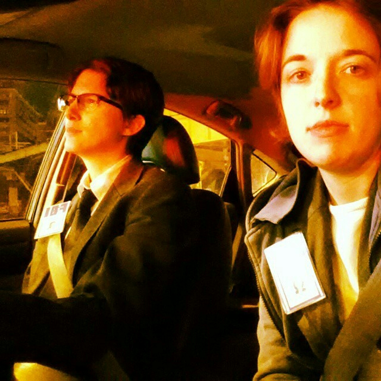
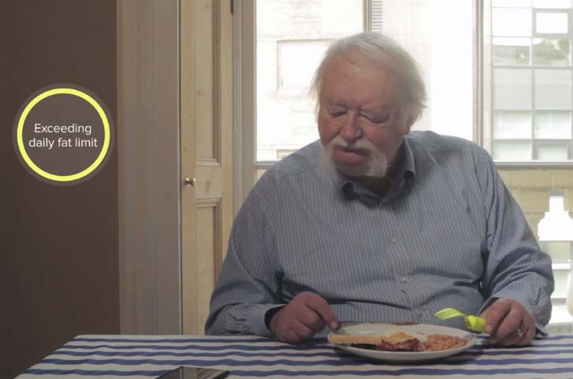
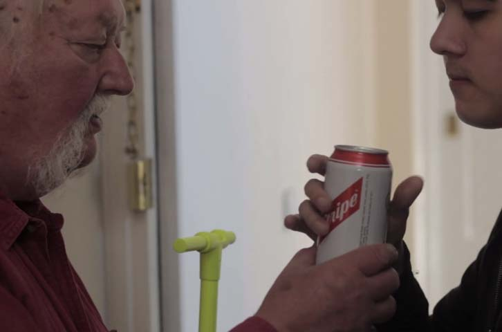

Who are we?

John Jung
Programmer/Analyst
University of Chicago Libraries

Kathy Zadrozny
(as Fox Mulder)
Web Developer and Graphic Design Specialist
University of Chicago Libraries
Past Iterations

The Future in Fiction

Design Fiction in Art
Practice

"One is lost in a new world of a thousand possibilities...which will carry one forward into a completely unknown territory"
Pierced Forms (1959)
Barbara Hepworth
Design Fiction in Art
Exploring Solutions

Bureau for Direct Democracy (1972)
Joseph Beuys, Documenta 5: Kassel, Germany
Report on a Day's Proceedings at the Bureau for Direct Democracy, by Dirk Schwarze
Dystopian & Utopian

Dystopian

Uninvited Guests (2015)
Superflux Lab
Dystopian

Uninvited Guests (2015)
Superflux Lab
Dystopian

Uninvited Guests (2015)
Superflux Lab
Utopian
Community

Some Utopian Video
Design Fiction in Practice
Mr. Jones Coffee Pots
by Habitat Industries
Why Use a Fictional Example?
Choose your own adventure.
Now you try!
Roll the die to choose your class.
Group rolls dice for other attributes.